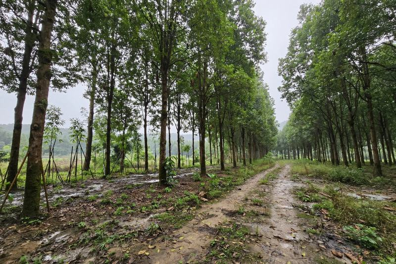

沉香真假
沉香图鉴
分辨真假 · 一看便知
分辨真假
先学会分辨真假，再谈买沉香。
全产区百科 · 5步自查 · 一物一证
去分辨真假 →全产区百科 · 5步自查 · 一物一证
产区速览
01
国内
海南 / 广东
广西 / 云南
广西 / 云南
02
越南 · 缅甸
芽庄 / 富森
菩萨奇 / 老挝
菩萨奇 / 老挝
03
星洲系
印尼 / 马来
文莱
文莱
海南、广东、广西、云南：以白木香为主，香韵清甜带凉意，适合入门品香。茂名、电白是广东代表产区。
17海南沉香：蜜韵清雅，国产代表›18广东茂名电白：白木香，中国沉香之乡›19广西、云南、福建：国内其他热门产区›越南芽庄清甜凉意，富森红土醇厚；缅甸、柬埔寨菩萨奇凉意足。热门产区价格较高，买前先核对证书与实物是否一致。
11惠安系 vs 星洲系：一次讲透›12越南芽庄：清甜凉意，热门高价产区›13越南富森红土：醇厚，为什么贵›14缅甸沉香：香韵、油脂、价格区间›15柬埔寨菩萨奇：凉意足，适合什么人›16老挝沉香：被低估的惠安系›热门文章

01 如何分辨真假沉香？先看这 3 点
成分、构造、证书三点一起看，单看颜色、沉水、香味都容易被骗。

02 泡油、注胶、压缩、染色：5 种造假手段一张图认清
造假手段就这几种，认清一次，以后看到都能警觉。

03 证书怎么看？CMA、CNAS、一物一证
证书不是护身符，要看编号能不能对上实物，机构有没有资质。
沉香图鉴 App 即将上架华为应用市场
同样的 40 篇百科、5 步自查，装进口袋里。先在网页上看，上架后第一时间下载。
沉香图鉴 · 先学会分辨真假，再谈买沉香